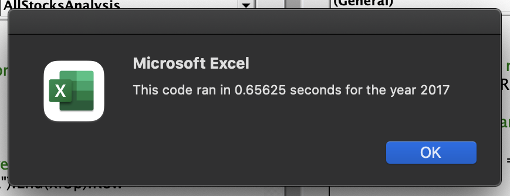
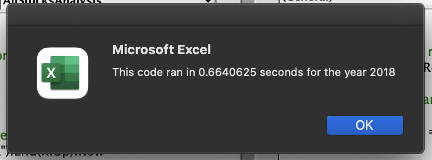
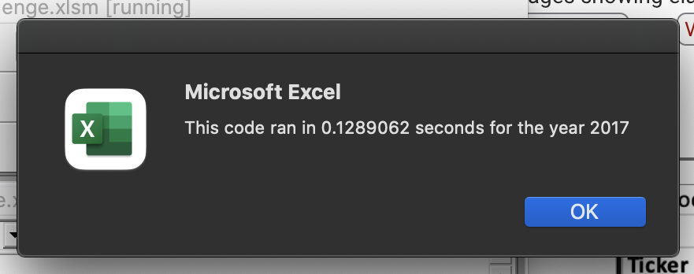
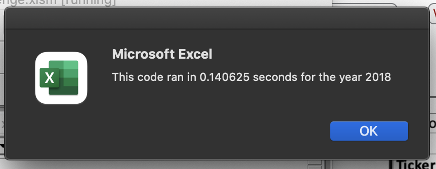

Challenge: Refactoring VBA Code
Table of Contents
| <<Back |
Overview
During this module, we managed to automate various basic Excel tasks using Visual Basic for Applications. The most important part of the process was that we managed to do it without focusing too much on the scripting language but rather the problems we wanted to solve.
Now that the mission is accomplished and the code works, we venture into optimization in order to make sure our code can cover more cases, particularly those cases where we have to work with data orders of magnitude bigger.
Results
Our initial code took about 0.66 seconds to run in both spreadsheets.
Initial, unoptimized code.
 The main problem with that version is that in had both conditional and nested loops that weren’t completely necessary.
Original Code
This is how our main loop looked initially.
For i = 0 To 11 ticker = tickers(i) totalVolume = 0 Worksheets("2018").Activate For j = 2 To RowCount If Cells(j, 1).Value = ticker Then totalVolume = totalVolume + Cells(j, 8).Value End If If Cells(j - 1, 1).Value <> ticker And Cells(j, 1).Value = ticker Then startingPrice = Cells(j, 6).Value End If If Cells(j + 1, 1).Value <> ticker And Cells(j, 1).Value = ticker Then endingPrice = Cells(j, 6).Value End If Next j Worksheets("All Stocks Analysis").Activate Cells(4 + i, 1).Value = ticker Cells(4 + i, 2).Value = totalVolume Cells(4 + i, 3).Value = endingPrice / startingPrice - 1 Next i
- The outer loop in this case is not necessary as we can initialize a different counter that is updated during the inner loop.
- There are too many single
If-Thenconditionals, it is better to reduce them. - We can move the outer loop to a separate process so we don’t have to call
Worksheets("").Activateevery time. - Having separate loops can improve readability and help us find bugs easily.
Refactored Code
This is how the main loop looks after refactoring it.
For i = startIndex To RowCount tickerVolumes(tickerIndex) = tickerVolumes(tickerIndex) + Cells(i, 8).Value If Cells(i, 1).Value <> Cells(i - 1, 1).Value Then tickerStartingPrices(tickerIndex) = Cells(i, 6).Value End If If Cells(i, 1).Value <> Cells(i + 1, 1).Value Then tickerEndingPrices(tickerIndex) = Cells(i, 6).Value tickerIndex = tickerIndex + 1 End If Next i
Of course we moved half of the process to another loop, but this helps us a lot when reading it even without comments. Here is the second part of the process.
For i = 0 To 11 Worksheets("All Stocks Analysis").Activate Cells(4 + i, 2).Value = tickerVolumes(i) Cells(4 + i, 3).Value = tickerEndingPrices(i) / tickerStartingPrices(i) - 1 Next i
Flat is better than nested. -Tim Peters.
Conclusions
Here are the measurements after the code was refactored.
 | Year | Before | After |
|---|---|---|
| 2017 | 0.65 | 0.12 |
| 2018 | 0.66 | 0.14 |
Which means that the code runs about 5.5 times faster. Imagine telling a client "I'll get back to you in 1 business day" against telling them "I'll get back to you in a week". Of course that is a dramatic example but it matters.
Summary
Being able to refactor code means a few different things:
- The person refactoring the code may not be the same who wrote it, so comments and readability are important.
- We can get an initial result and solve a our problems at hand with a first version of the code but if we want to be able to solve more problems, we can always refactor to make it sure we can solve those problems too. As long as they remains within the code design.
- We can spend more time in data analysis instead of coding or waiting for results. If we manage to get good code and good performance, we will have one less thing to worry about.
Cons of refactoring code:
- If the original design is too flawed we may spend we may spend too much time trying to figure out what the original coder intended, so we may be better off making our own script.
- We may find ourselves surrounded by a lot of special cases that the original script didn’t intent to cover and we may complicate things further if we start adding complexity to the design.
Pros of refactoring code:
- Refactoring can include using code from a completely different project but that fits the patterns of our problem at hand, so in that case is valid to reuse code and gain some time in the coding process.
- As long as the scripting language allows it, we can be sure that the code will last for many years as if something out of our control changes like a database or a functionality in Excel, we can refactor our code to fit that new requirement. In case of other languages, we can also include new libraries or technologies that will improve our code performance without needing to change the logic of it.
Closing Thoughts
Just as completition of the data analysis, I include a short table of the partial results of the data. Ideally we could create more macros to keep adding years in a sequential way like this and it will only take a few seconds to keep organizing the data in ways we can get a much clearer picture of it.
| Ticker | Return 2017 | Return 2018 | Change |
|---|---|---|---|
| AY | 8.9% | -7.3% | -16.2% |
| CSIQ | 33.1% | -16.3% | -49.4% |
| DQ | 199.4% | -62.6% | -262.0% |
| ENPH | 129.5% | 81.9% | -47.6% |